Japan / Hokkaido / Nakashibetsu
Nakashibetsu
Nakashibetsu · Hokkaido
Nakashibetsu
Highlighted on the Hokkaido map.
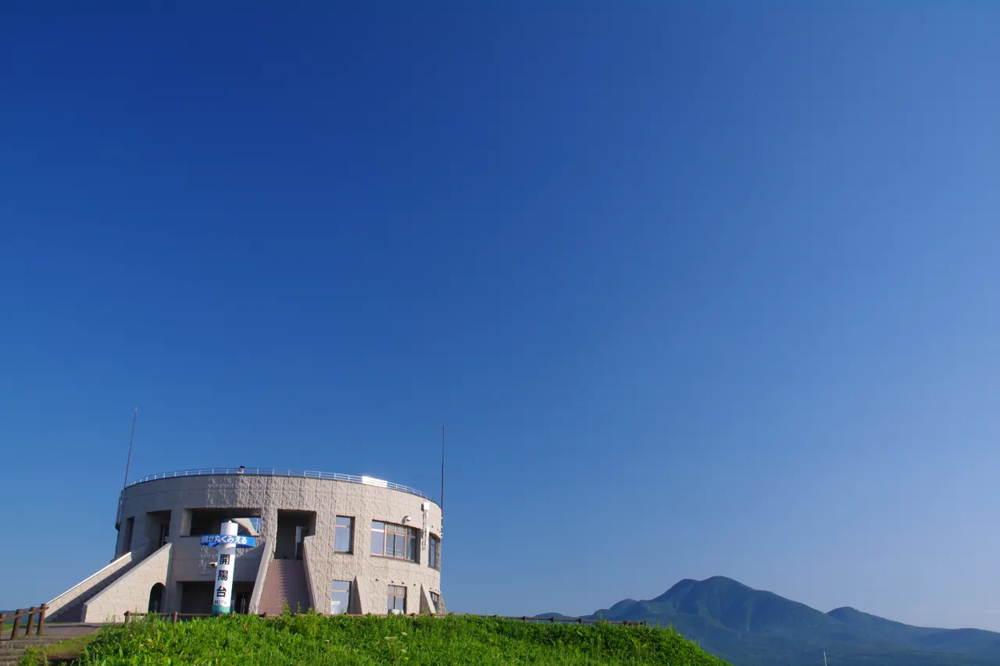
Stay
ホテル開陽イン
Hoteru Kaiyou In
ushiyado
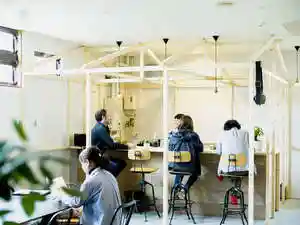
Ushiyado
ＴａｂｉｓｔまちのやどＤＥＮＤＥＮ
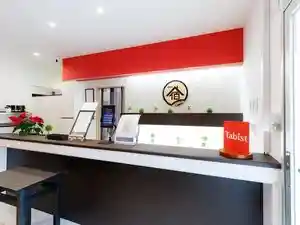
T A B I S T Machinoyado D E N D E N
トーヨーグランドホテル
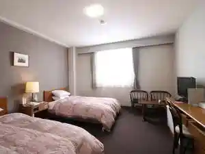
Tooyoogurandohoteru
ホテル モアン
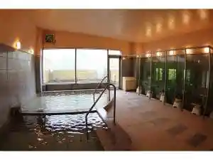
Hoteru Moan
ペンション フォルメン

Penshon Forumen
ビジネスホテルＡＲＭもみの木
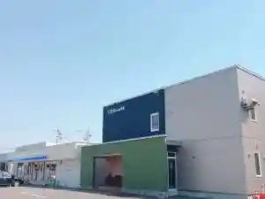
Bijinesuhoteru A R M Momino Ki
CABIN KUTEKUN
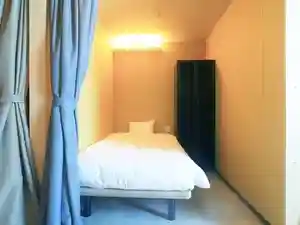
Cabin Kutekun
ホテルクテクン
Hoterukutekun
Ｔａｂｉｓｔ ＯＮＳＥＮ ＭＯＴＥＬ２７２
T A B I S T O N S E N M O T E L 2 7 2
湯宿だいいち
Yuyado Daiichi
Dining
魚民 中標津店

Uotami Nakashibetsu Mise
そば処 よしだ屋
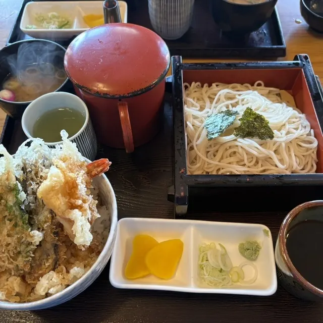
Soba Tokoro Yoshida Ya
焼肉青龍苑
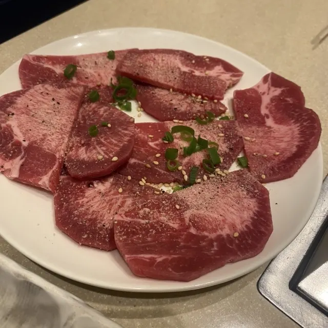
Yakiniku Seiryuu En
パン工房 ぴえーる スーパーアークス中標津店
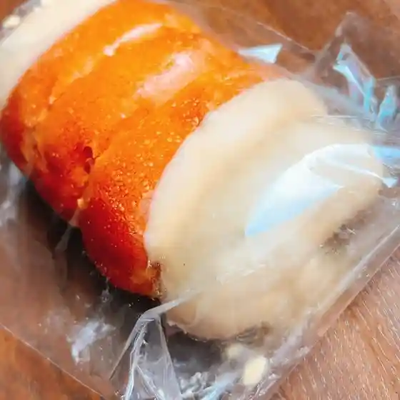
Pan Koubou Pieeru Suupaaaakusu Nakashibetsu Mise
びっくりドンキー 中標津店
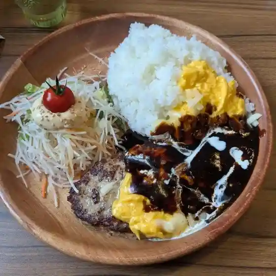
Bikkuri Donkii Nakashibetsu Mise
レストランパブ ラ・キンコ 東武サウスヒルズ店
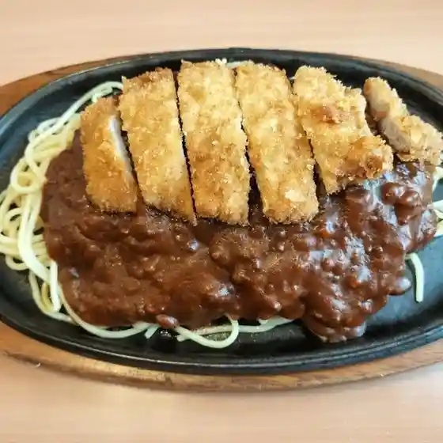
Resutoranpabu Ra Kinko Toubu Sausuhiruzu Mise
ウエストオーブン
Uesutooobun
トーヨーグランドホテル
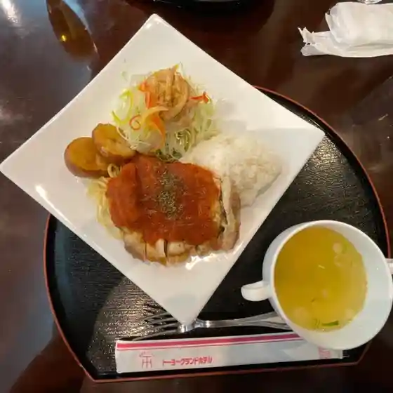
Tooyoogurandohoteru
パン工房ぴえーる
Pan Koubou Pieeru
ぱすてる
Pasuteru
ARM もみの木 中標津
Arm Momino Ki Nakashibetsu
Cafe ゆらり
Cafe Yurari
鮨・和食 わたなべ
Sushi Washoku Watanabe
フクハラ 中標津店
Fukuhara Nakashibetsu Mise
ぷちあるる
Puchiaruru
茶山
Chayama
炭火焼肉 雅々
Sumibi Yakiniku Masa (Kurikaesi)
知床らーめん なかがわ
Shiretoko Raamen Nakagawa
セイコーマート 中標津東店
Seikoomaato Nakashibetsu Higashi Mise
海皇 中標津店
Kaiou Nakashibetsu Mise
木多郎 倶楽部 中標津店
Kita Rou Kurabu Nakashibetsu Mise
ヒゲとハナウタ
Hige To Hanauta
茶房花どーり
Sabou Hana Doori
ホテル開陽イン
Hoteru Kaiyou In